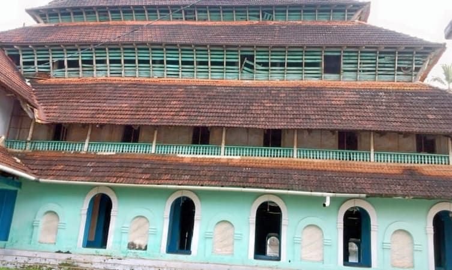
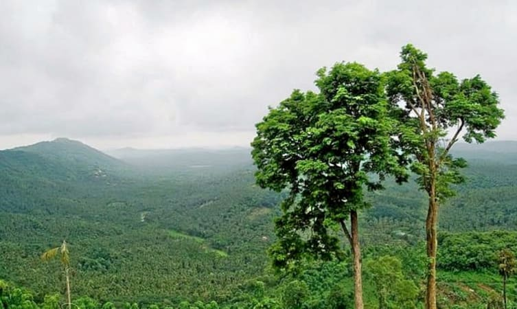

01.Mamburam

A famous Muslim Pilgrimage in the Malappuram district, Mamburam is a shrine dedicated to the dead bodies of some of the primary Thangals of Kerala. It was a title given to the Arabs from Yemen who scattered from there and migrated to Kerala.
They held great importance to the locals of Kerala and thus, had this shrine dedicated to them. A local festival held here during the time of Muharram is one of the primary attractions of this place.
Location: Malappuram,Kerala
Entry Fees: None
Timings: All day
How to reach from city: The shrine is located about 26 km from the town of Tirur and can be reached easily via road.
02.Keralamkundu Waterfalls

A basin at the base of waterfalls where people can enjoy a dip in the pond is something everyone wants to have an experience. Keralam Kundu Waterfalls are undoubtedly the best of all Malappuram Tourist Places, and that is why people keep flocking here to have an experience of the mystical.
The water flows in from the forest of the western ghat and forms a pool of crystal clear water at the base of the falls. Also, it is believed that the water has many medicinal properties.
Location:Silent Valley National Park, Karuvarakundu 676523, India
Entry Fees: INR 10 per person.
Timings: Everyday 8:30 to 6 PM
How to reach from city: You can get here by road from Malappuram and Shornur. But be prepared as you will have to walk for a while from the road.
03.Arimbra Hills

Arimbra Hills or Mini Ooty is one of the most scenic places to visit in Malappuram. The place is called mini Ooty because of its resemblance to the hill station of the same name, and a rather famous one at that.
Located at a height of about 1,050 feet above sea level, you can get a breathtaking view of the area around. Not just that, on the top of the hill, you can get to see a number of stone crushers, plantations, and a few Jain temples as well.
Location:Malappuram, Kerala 679331
Entry Fees: None.
Timings: No Time.
How to reach from city: It can be reached by traveling a 4 km distance from Aravankara.